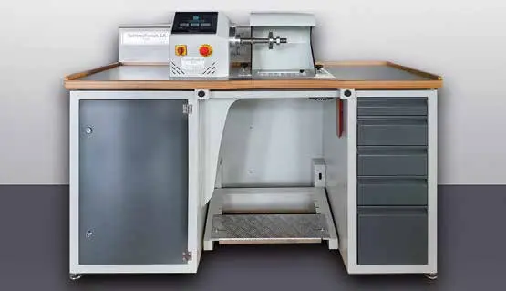

Présentation
Société créée en 1947, spécialisée dans les brosses techniques 100 % suisses pour le service après-vente en horlogerie, en bijouterie et dans le dentaire. Rachetée et sauvée de la faillite par TechnoFinish SA, elle se présente comme la seule entreprise suisse à fabriquer ces brosses.
Photos
Articles

PublireportageTechnoFinish SA – La fiabilité suisse à votre service depuis 2003 / TechnoFormage SA – Des solutions pour l’emballage thermoformé et injecté
Polissage, brosses techniques et conditionnement, désormais aussi biodégradable
Publireportage

TechnoFinish SA – La fiabilité suisse à votre service depuis 2003 / TechnoFormage SA – Des solutions pour l’emballage thermoformé et injecté
Polissage, brosses techniques et conditionnement pour l’horlogerie
Publireportage
TechnoFinish SA – La fiabilité suisse à votre service depuis 2003 / TechnoFormage SA – Des solutions pour l’emballage thermoformé et injecté
Polissage, brosses techniques et conditionnement pour l’horlogerie
 Publireportage
PublireportageTechnoFinish SA – La fiabilité suisse à votre service depuis 2003
PublireportageTechnoFormage SA – Des solutions pour l'emballage thermoformé et injecté
 Publireportage
PublireportageTechnofinish SA – Tout pour le polissage horloger
Technofinish SA – Everything for watch polishing
PublireportagePolirapid Swiss SA – Brosses techniques pour un polissage parfait
Polirapid Swiss SA – Technical brushes for perfect polishing